| Field | Value |
|---|---|
| Test date | 2026-06-01 |
| Test platform | NVIDIA DGX Spark, GB10, Ubuntu, aarch64 |
| Core question | Performance, compatibility, and quality risks for two NVFP4 paths on Spark |
| NVFP4 path A | RedHatAI/Qwen3.6-35B-A3B-NVFP4, compressed-tensors |
| NVFP4 path B | nvidia/Qwen3.6-35B-A3B-NVFP4, ModelOpt |
| Baseline models | Qwen/Qwen3.6-35B-A3B-FP8,
RedHatAI/Qwen3.6-35B-A3B-FP8-dynamic |
| Runtime | eugr Spark vLLM, upstream/community vLLM, Red Hat AI Inference Server vLLM, SGLang nightly |
| Tools | vllm bench serve, GuideLLM 0.6.0, deterministic
smoke-quality probes |
| Charts and data | images/, data/ |
There are currently two NVFP4 paths on this Spark system, and they need to be managed separately:
RedHatAI/Qwen3.6-35B-A3B-NVFP4
compressed-tensors checkpoint: This is the most complete
performance track so far. Under eugr Spark vLLM, the short-context
128/128 sweep reaches 581.52 output tok/s at c64 and
827.01 output tok/s at c256. On the same machine and with
the same tool, it starts to show better throughput density than
Qwen/Qwen3.6-35B-A3B-FP8 from c16 onward.nvidia/Qwen3.6-35B-A3B-NVFP4 ModelOpt
checkpoint: This is a newer checkpoint format. It does not
require NIM or TensorRT-LLM just to run inference;
vllm/vllm-openai:nightly and
spark-vllm-nvfp4:latest can already run c16/c64/c128. eugr
Spark vLLM reaches 807.29 output tok/s at c128, while
upstream nightly reaches 771.79 output tok/s at c128.
However, it requires a newer ModelOpt loader/backend.
vllm/vllm-openai:latest 0.22.0 and Red Hat vLLM 3.4.0 do
not currently run this ModelOpt checkpoint.lmsysorg/sglang:spark image does not yet recognize
qwen3_5_moe, so this round used the newer
lmsysorg/sglang:nightly-dev-cu13-20260530-95cd2fd2 image.
SGLang nightly can run RedHatAI/Qwen3.6-35B-A3B-NVFP4,
reaching 600.18 output tok/s at c64 and
723.33 output tok/s at c128. It can also run
Qwen/Qwen3.6-35B-A3B-FP8 through c128, reaching
636.08 output tok/s at c128.
nvidia/Qwen3.6-35B-A3B-NVFP4 still fails under SGLang
nightly, and RedHatAI/Qwen3.6-35B-A3B-FP8-dynamic only
passes c1 smoke; the service exits before c4.RedHatAI/Qwen3.6-35B-A3B-NVFP4 tests at
16K/32K/64K/100K agent-like prompt lengths under a
--max-model-len 131072 service configuration. 100K prompts
complete at both c1 and c4, but TTFT and end-to-end latency are already
in a long-wait regime.The two NVFP4 models should not be forced through the same recipe.
The key for RedHatAI/Qwen3.6-35B-A3B-NVFP4 is
compressed-tensors plus cutlass/attention backend tuning. The key for
nvidia/Qwen3.6-35B-A3B-NVFP4 is
--quantization modelopt, a newer vLLM 0.22.1rc-level
loader, and ModelOpt support for the quantized lm_head
tensors. The SGLang results add another important dimension: support
boundaries depend on the exact checkpoint format and runtime
implementation, not merely on a broad “supports NVFP4/FP8” label.
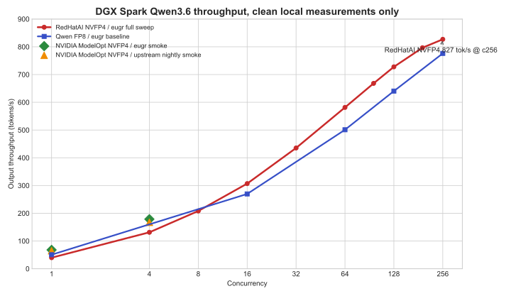
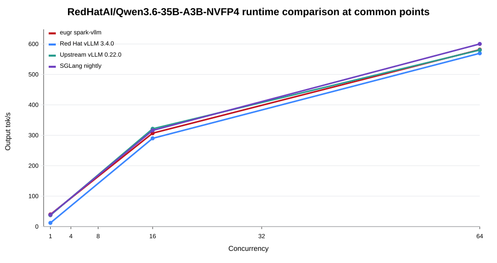
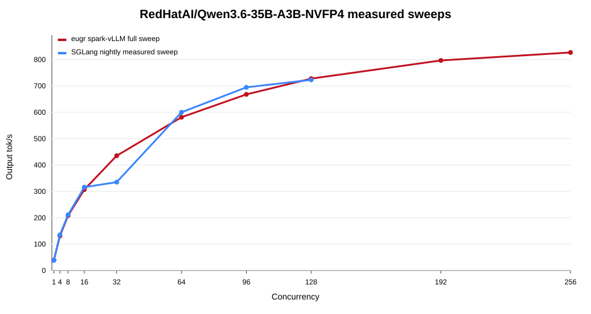
flowchart LR
S["DGX Spark / GB10"] --> E["eugr Spark vLLM"]
S --> U["upstream/community vLLM"]
S --> R["Red Hat vLLM 3.4.0"]
S --> G["SGLang nightly"]
E --> A1["RedHatAI/Qwen3.6-35B-A3B-NVFP4 full sweep c1-c256"]
E --> A2["Qwen/Qwen3.6-35B-A3B-FP8 baseline c1/c16/c64/c128/c256"]
E --> A3["nvidia/Qwen3.6-35B-A3B-NVFP4 c1/c4/c16/c64/c128"]
E --> A4["RedHatAI/Qwen3.6-35B-A3B-NVFP4 GuideLLM + 4K/8K/16K/32K/64K/100K agent-like context + smoke-quality probes"]
U --> B1["RedHatAI/Qwen3.6-35B-A3B-NVFP4 c1/c16/c64"]
U --> B2["Qwen/Qwen3.6-35B-A3B-FP8 c1/c16/c64"]
U --> B3["nvidia/Qwen3.6-35B-A3B-NVFP4 nightly c1/c4/c16/c64/c128"]
U --> B4["RedHatAI/Qwen3.6-35B-A3B-FP8-dynamic failed startup"]
R --> C1["RedHatAI/Qwen3.6-35B-A3B-NVFP4 c1/c16/c64"]
R --> C2["Qwen/Qwen3.6-35B-A3B-FP8 c1/c16/c64"]
R --> C3["RedHatAI/Qwen3.6-35B-A3B-FP8-dynamic c1/c16/c64"]
R --> C4["nvidia/Qwen3.6-35B-A3B-NVFP4 smoke failed"]
G --> D1["RedHatAI/Qwen3.6-35B-A3B-NVFP4 c1/c4/c8/c16/c32/c64/c96/c128"]
G --> D2["Qwen/Qwen3.6-35B-A3B-FP8 c1/c4/c8/c16/c32/c64/c96/c128"]
G --> D3["RedHatAI/Qwen3.6-35B-A3B-FP8-dynamic c1 only; c4 service exit"]
G --> D4["nvidia/Qwen3.6-35B-A3B-NVFP4 startup failed"]| Model | Format / loading path | Current status | Direct impact |
|---|---|---|---|
RedHatAI/Qwen3.6-35B-A3B-NVFP4 |
compressed-tensors / nvfp4-pack-quantized |
eugr, upstream, and Red Hat vLLM all run it | Suitable for full throughput sweeps, long-context tests, and smoke-quality probes |
nvidia/Qwen3.6-35B-A3B-NVFP4 |
ModelOpt mixed quantization | upstream nightly and eugr run it; upstream latest and Red Hat 3.4 do not currently run it | Requires a separate runtime lane; do not apply the RedHatAI recipe |
SGLang adds a third dimension. The compressed-tensors format in
RedHatAI/Qwen3.6-35B-A3B-NVFP4 can be auto-detected and
served by SGLang nightly. The ModelOpt/w4afp8 path in
nvidia/Qwen3.6-35B-A3B-NVFP4 can be recognized structurally
by the same SGLang nightly image, but it fails during weight block-shape
validation. For now, SGLang is a viable optional runtime for
RedHatAI/Qwen3.6-35B-A3B-NVFP4, not a replacement runtime
for nvidia/Qwen3.6-35B-A3B-NVFP4.
The NVIDIA ModelOpt checkpoint also quantizes the output head:
lm_head.input_scale torch.float32 ()
lm_head.weight torch.uint8 (248320, 1024)
lm_head.weight_scale torch.float8_e4m3fn (248320, 128)
lm_head.weight_scale_2 torch.float32 ()This explains why vllm/vllm-openai:latest 0.22.0 fails:
its model class accepts lm_head.weight but not this set of
ModelOpt output-head scale tensors. --ignore-patterns
cannot fix this, because the issue is not file filtering during
download; it is a mismatch between checkpoint tensor keys and
model-loader support.
RedHatAI/Qwen3.6-35B-A3B-NVFP4 On eugr Spark vLLMThis full sweep uses eugr spark-vllm-nvfp4:latest. The
benchmark tool is vllm bench serve; the workload is random
128 input tokens / 128 output tokens; and the service uses
max_model_len=32768. Therefore this table answers the
short-context capacity question, not the agent long-session
question.
| Concurrency | output tok/s | peak output tok/s | TTFT p50 | TPOT p50 | Interpretation |
|---|---|---|---|---|---|
| 1 | 39.85 | 43 | 90 ms | 23.7 ms | Single-user baseline |
| 8 | 208.21 | 250 | 266 ms | 36.4 ms | Light concurrency, still relatively interactive |
| 16 | 306.93 | 400 | 377 ms | 49.0 ms | One of the balanced points |
| 32 | 435.28 | 608 | 724 ms | 68.1 ms | Already throughput-oriented |
| 64 | 581.52 | 896 | 1534 ms | 97.5 ms | Better suited to batch/background work |
| 128 | 727.74 | 1024 | 2897 ms | 153.5 ms | High throughput, not pleasant for human waiting |
| 256 | 827.01 | 1280 | 4595 ms | 272.8 ms | Peak capacity point |
The same model under SGLang nightly is shown below. The SGLang
workload is also vllm bench serve style, with
128 input tokens / 128 output tokens. The image is
lmsysorg/sglang:nightly-dev-cu13-20260530-95cd2fd2, using
--context-length 65536 and
--max-running-requests 128. At c64 it is in the same range
as eugr/upstream/Red Hat vLLM, but c32 has a significant TTFT p99 tail.
c96/c128 continue to increase throughput, while TPOT has already moved
into a background-throughput range.
| Concurrency | SGLang output tok/s | peak output tok/s | TTFT p50 | TTFT p99 | TPOT p50 |
|---|---|---|---|---|---|
| 1 | 38.70 | 41 | 135 ms | 190 ms | 24.94 ms |
| 4 | 135.26 | 152 | 286 ms | 325 ms | 27.98 ms |
| 8 | 211.46 | 280 | 391 ms | 602 ms | 34.91 ms |
| 16 | 316.10 | 448 | 606 ms | 936 ms | 45.80 ms |
| 32 | 335.25 | 1798 | 1003 ms | 13892 ms | 64.52 ms |
| 64 | 600.18 | 1216 | 1698 ms | 2030 ms | 93.37 ms |
| 96 | 694.80 | 1057 | 2135 ms | 2576 ms | 122.12 ms |
| 128 | 723.33 | 1143 | 2379 ms | 3522 ms | 152.13 ms |
On Spark, maximum throughput and best interactive experience are not the same point:
RedHatAI/Qwen3.6-35B-A3B-NVFP4 vs
Qwen/Qwen3.6-35B-A3B-FP8The first table in this section also uses eugr
spark-vllm-nvfp4:latest and vllm bench serve,
with a random 128 input tokens / 128 output tokens
workload. It compares NVFP4 and FP8 short-context throughput density
under the same runtime.
| Concurrency | RedHatAI/Qwen3.6-35B-A3B-NVFP4
tok/s |
Qwen/Qwen3.6-35B-A3B-FP8
tok/s |
RedHatAI/Qwen3.6-35B-A3B-NVFP4
delta |
RedHatAI/Qwen3.6-35B-A3B-NVFP4
TTFT |
Qwen/Qwen3.6-35B-A3B-FP8
TTFT |
|---|---|---|---|---|---|
| 1 | 39.85 | 50.58 | -21.2% | 90 ms | 115 ms |
| 16 | 306.93 | 269.61 | +13.8% | 377 ms | 602 ms |
| 64 | 581.52 | 500.97 | +16.1% | 1534 ms | 1517 ms |
| 128 | 727.74 | 640.38 | +13.6% | 2897 ms | 2879 ms |
| 256 | 827.01 | 776.18 | +6.5% | 4595 ms | 3841 ms |
At single stream, Qwen/Qwen3.6-35B-A3B-FP8 is faster.
From c16 onward, RedHatAI/Qwen3.6-35B-A3B-NVFP4 has better
system throughput. The main value of
RedHatAI/Qwen3.6-35B-A3B-NVFP4 is not single-user speed; it
is throughput density at medium and high concurrency.
SGLang nightly shows a similar pattern, although the absolute values differ. The table is now filled through c96/c128 so both SGLang curves are aligned at the same concurrency points:
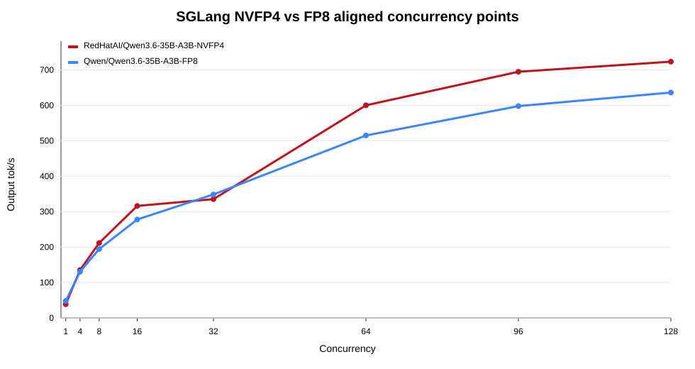
| Concurrency | RedHatAI/Qwen3.6-35B-A3B-NVFP4
SGLang tok/s |
Qwen/Qwen3.6-35B-A3B-FP8
SGLang tok/s |
Interpretation |
|---|---|---|---|
| 1 | 38.70 | 47.80 | FP8 is faster at single stream |
| 4 | 135.26 | 130.49 | Very close |
| 8 | 211.46 | 194.28 | RedHatAI/Qwen3.6-35B-A3B-NVFP4 starts to lead |
| 16 | 316.10 | 277.74 | NVFP4 has better medium-concurrency throughput |
| 32 | 335.25 | 348.62 | Close, but SGLang NVFP4 has a TTFT tail |
| 64 | 600.18 | 515.03 | NVFP4 leads at c64 |
| 96 | 694.80 | 597.90 | NVFP4 continues to lead; both are in background-throughput territory |
| 128 | 723.33 | 636.08 | NVFP4 still leads, but TPOT is no longer interactive |
nvidia/Qwen3.6-35B-A3B-NVFP4 ModelOpt Sweepnvidia/Qwen3.6-35B-A3B-NVFP4 uses a ModelOpt checkpoint
and requires --quantization modelopt. This version extends
the earlier c1/c4 smoke tests to c16/c64/c128 under
--max-num-seqs 128. The benchmark tool is still
vllm bench serve; the workload is random
128 input tokens / 128 output tokens; and the service
configuration includes --kv-cache-dtype fp8,
--attention-backend flashinfer,
--moe-backend marlin, --max-model-len 65536,
--max-num-batched-tokens 8192, and
--enable-prefix-caching.
| Runtime | Case | Completed | Request/s | Output tok/s | Total tok/s | TTFT | TPOT |
|---|---|---|---|---|---|---|---|
| upstream nightly | c1 | 8 | 0.507 | 64.90 | 135.05 | 312.47 ms | 13.07 ms |
| upstream nightly | c4 | 32 | 1.308 | 167.40 | 348.53 | 522.68 ms | 19.96 ms |
| upstream nightly | c16 | 64 | not captured | 368.75 | 767.38 | 786 ms p50 | 36.10 ms p50 |
| upstream nightly | c64 | 256 | not captured | 662.45 | 1378.96 | 1622 ms p50 | 83.74 ms p50 |
| upstream nightly | c128 | 512 | not captured | 771.79 | 1606.30 | 2869 ms p50 | 141.11 ms p50 |
| eugr Spark vLLM | c1 | 8 | 0.530 | 67.87 | 141.24 | 272.85 ms | 12.70 ms |
| eugr Spark vLLM | c4 | 32 | 1.396 | 178.65 | 371.96 | 303.85 ms | 19.94 ms |
| eugr Spark vLLM | c16 | 64 | not captured | 344.91 | 717.78 | 749 ms p50 | 37.79 ms p50 |
| eugr Spark vLLM | c64 | 256 | not captured | 669.20 | 1393.00 | 1392 ms p50 | 85.41 ms p50 |
| eugr Spark vLLM | c128 | 512 | not captured | 807.29 | 1680.19 | 2500 ms p50 | 139.04 ms p50 |
c1/c4 come from the mean-latency fields in the earlier smoke output. c16/c64/c128 come from the full benchmark summary and are marked as p50 in the table. Together they show that the ModelOpt checkpoint can be served and can reach high concurrency, but strict trend analysis should use a future complete sweep generated by the same script format.
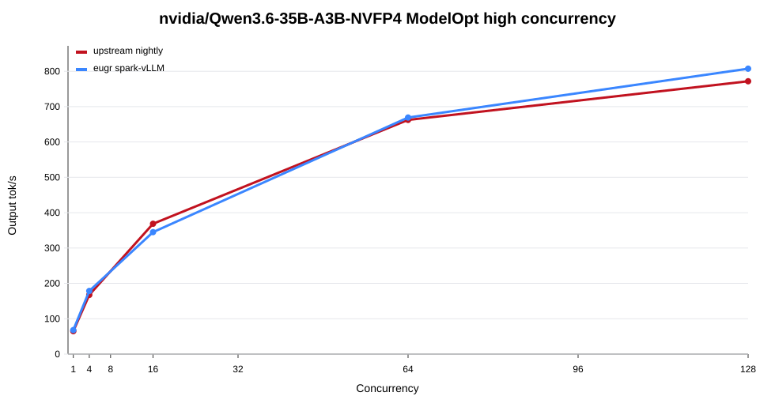
For nvidia/Qwen3.6-35B-A3B-NVFP4, SGLang nightly is in a
“recognizes the model but cannot finish loading it” state. After
auto-detecting a w4afp8 checkpoint, it fails block-shape
validation for a linear-attention projection:
Weight output_partition_size = 32 is not divisible by weight quantization block_n = 128.
Therefore SGLang is not included in the performance table for
nvidia/Qwen3.6-35B-A3B-NVFP4.
This runtime chart only uses the three common concurrency points c1/c16/c64, because those are the points where eugr, upstream, Red Hat vLLM, and SGLang currently have aligned data. The full sweeps are covered in section 4.1. Extending runtime lines to c128/c256 where no data was collected would be misleading.
| Runtime | Model | Representative concurrency | output tok/s | Conclusion |
|---|---|---|---|---|
| eugr Spark vLLM | RedHatAI/Qwen3.6-35B-A3B-NVFP4 |
c64 | 581.52 | Main performance baseline; c1-c256 available |
| upstream vLLM 0.22.0 | RedHatAI/Qwen3.6-35B-A3B-NVFP4 |
c64 | 580.14 | c64 is close to eugr |
| Red Hat vLLM 3.4.0 | RedHatAI/Qwen3.6-35B-A3B-NVFP4 |
c64 | 569.38 | c64 is close, but c1 is slower |
| SGLang nightly | RedHatAI/Qwen3.6-35B-A3B-NVFP4 |
c64 | 600.18 | Same general range at c64; c96/c128 continue to rise but latency is background-oriented |
| eugr Spark vLLM | Qwen/Qwen3.6-35B-A3B-FP8 |
c64 | 500.97 | Faster at single stream, lower than
RedHatAI/Qwen3.6-35B-A3B-NVFP4 at medium/high
concurrency |
| SGLang nightly | Qwen/Qwen3.6-35B-A3B-FP8 |
c64 | 515.03 | Same general range at c64; not clearly better than vLLM |
| Red Hat vLLM 3.4.0 | RedHatAI/Qwen3.6-35B-A3B-FP8-dynamic |
c64 | 486.42 | Continue only in the Red Hat lane for now |
| SGLang nightly | RedHatAI/Qwen3.6-35B-A3B-FP8-dynamic |
c4 | failed | --disable-cuda-graph passes c1 smoke, but the service
exits before c4 |
| eugr Spark vLLM | nvidia/Qwen3.6-35B-A3B-NVFP4 |
c128 | 807.29 | ModelOpt lane now runs high concurrency; c128 is slightly higher than upstream nightly |
| upstream nightly | nvidia/Qwen3.6-35B-A3B-NVFP4 |
c128 | 771.79 | ModelOpt lane now runs high concurrency; requires nightly-level loader support |
| SGLang nightly | nvidia/Qwen3.6-35B-A3B-NVFP4 |
startup | failed | w4afp8 block-shape validation failure |
Red Hat vLLM 3.4.0 remains important for the RedHatAI model line: it
can stably run RedHatAI/Qwen3.6-35B-A3B-NVFP4,
RedHatAI/Qwen3.6-35B-A3B-FP8-dynamic, and
Qwen/Qwen3.6-35B-A3B-FP8. SGLang nightly adds a runtime
lane that can run both RedHatAI/Qwen3.6-35B-A3B-NVFP4 and
Qwen/Qwen3.6-35B-A3B-FP8, but it is not stable for
RedHatAI/Qwen3.6-35B-A3B-FP8-dynamic and does not yet run
nvidia/Qwen3.6-35B-A3B-NVFP4.
RedHatAI/Qwen3.6-35B-A3B-NVFP4Main verified configuration in eugr Spark vLLM:
--max-model-len 32768
--max-num-batched-tokens 8192
--gpu-memory-utilization 0.70
--kv-cache-dtype fp8
--moe-backend cutlass
--load-format fastsafetensors
--attention-backend flashinfer
--enable-prefix-cachingnvidia/Qwen3.6-35B-A3B-NVFP4Core parameters that worked for upstream nightly and eugr in this round:
--quantization modelopt
--kv-cache-dtype fp8
--attention-backend flashinfer
--moe-backend marlin
--gpu-memory-utilization 0.85
--max-model-len 65536
--max-num-seqs 128
--max-num-batched-tokens 8192
--enable-chunked-prefill
--async-scheduling
--enable-prefix-cachingParameter boundaries:
--quantization modelopt is for the
nvidia/Qwen3.6-35B-A3B-NVFP4 checkpoint. It should not be
applied to the RedHatAI/Qwen3.6-35B-A3B-NVFP4
compressed-tensors checkpoint.--moe-backend marlin works for
nvidia/Qwen3.6-35B-A3B-NVFP4, while
RedHatAI/Qwen3.6-35B-A3B-NVFP4 is better aligned with
cutlass-related paths in the Red Hat vLLM lane.VLLM_FP8_MOE_BACKEND=flashinfer_cutlass is reported as
an unknown vLLM environment variable in the 0.22.x logs from this round,
so it should not be documented as a confirmed effective recipe
parameter.VLLM_USE_FLASHINFER_MOE_FP4=0 is already reported as
deprecated in 0.22.1rc logs. Future recipes should prefer explicit
--moe-backend.The SGLang nightly configuration that served
RedHatAI/Qwen3.6-35B-A3B-NVFP4 in this round was:
lmsysorg/sglang:nightly-dev-cu13-20260530-95cd2fd2
--model-path /models/huggingface/RedHatAI/Qwen3.6-35B-A3B-NVFP4
--served-model-name RedHatAI/Qwen3.6-35B-A3B-NVFP4
--tensor-parallel-size 1
--trust-remote-code
--dtype auto
--kv-cache-dtype fp8_e4m3
--attention-backend flashinfer
--moe-runner-backend flashinfer_cutlass
--mem-fraction-static 0.85
--max-running-requests 128
--context-length 65536SGLang boundaries:
--quantization modelopt_fp4 to
RedHatAI/Qwen3.6-35B-A3B-NVFP4; the working path in this
round is to let SGLang auto-detect compressed-tensors/NVFP4 from the
checkpoint.Qwen/Qwen3.6-35B-A3B-FP8 should also use auto
quantization in SGLang. Explicit
--quantization modelopt_fp8 --moe-runner-backend flashinfer_cutlass
conflicts with the model config’s fp8 setting.lmsysorg/sglang:spark is not suitable for this Qwen3.6
round because its Transformers version does not recognize
qwen3_5_moe; the SGLang numbers in this report come from
the nightly image.RedHatAI/Qwen3.6-35B-A3B-FP8-dynamic Is A Red Hat Runtime
LaneRedHatAI/Qwen3.6-35B-A3B-FP8-dynamic should not be
treated as interchangeable with the regular
Qwen/Qwen3.6-35B-A3B-FP8.
Observed differences:
TRITON_ATTN failed during engine initialization and never
reached benchmark.TRITON_ATTN can run
c1/c16/c64.--disable-cuda-graph passes smoke
and c1, but the service exits after c1, so c4 becomes 16/16 connection
failures.Current recommendation: continue testing
RedHatAI/Qwen3.6-35B-A3B-FP8-dynamic only in the Red Hat
vLLM lane. Do not risk eugr/upstream/SGLang stress tests for it at this
point.
The GuideLLM 0.6.0 concurrent profile used eugr
spark-vllm-nvfp4:latest, the
RedHatAI/Qwen3.6-35B-A3B-NVFP4 model, and an
OpenAI-compatible HTTP endpoint. The GuideLLM workload is synthetic text
at roughly 128 prompt tokens / 128 output tokens. The vLLM
benchmark comparison uses the same runtime and model, but the prompts
are random 128 input tokens / 128 output tokens generated
by vllm bench serve. Therefore this is not a
request-by-request same-prompt comparison; it validates the throughput
range for the same short-context concurrency band.
| Concurrency | GuideLLM output tok/s | vLLM bench output tok/s | GuideLLM TTFT p50 | vLLM TTFT p50 |
|---|---|---|---|---|
| 1 | 41.9 | 39.85 | 86 ms | 90 ms |
| 4 | 135.8 | 131.34 | 194 ms | 139 ms |
| 8 | 220.5 | 208.21 | 312 ms | 266 ms |
| 16 | 277.5 | 306.93 | 504 ms | 377 ms |
| 32 | 394.8 | 435.28 | 900 ms | 724 ms |
Long-context testing should be read in two layers. 4K/8K is a
medium-context agent-like prompt and already shows that prefill pressure
changes throughput and TTFT significantly. It still does not represent
true 64K/100K long sessions. The 16K/32K/64K/100K tests use the same
model with the service raised to --max-model-len 131072,
and the model config was confirmed to have
text_config.max_position_embeddings=262144. The prompts
include state recall, tool-call JSON, policy constraints, and benchmark
accounting; each request records throughput/latency and checks task
success.
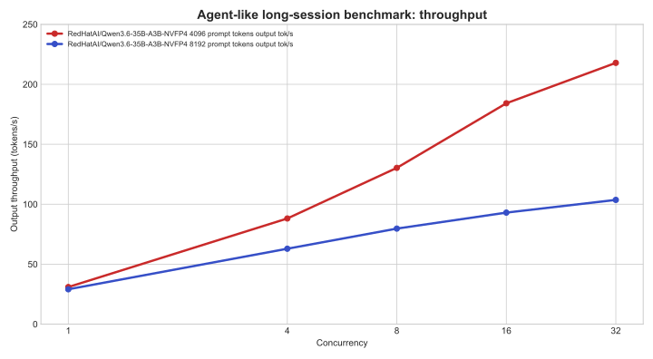
| Model | Prompt tokens | Concurrency | Requests | Success | output tok/s | TTFT p50 | TTFT p95 | Latency p50 | Latency p95 |
|---|---|---|---|---|---|---|---|---|---|
RedHatAI/Qwen3.6-35B-A3B-NVFP4 |
4096 | 1 | 4 | 4/4 | 30.93 | 161 ms | 784 ms | 1304 ms | 1639 ms |
RedHatAI/Qwen3.6-35B-A3B-NVFP4 |
4096 | 4 | 8 | 8/8 | 88.12 | 251 ms | 456 ms | 1568 ms | 2597 ms |
RedHatAI/Qwen3.6-35B-A3B-NVFP4 |
4096 | 8 | 16 | 16/16 | 130.34 | 386 ms | 756 ms | 2262 ms | 3393 ms |
RedHatAI/Qwen3.6-35B-A3B-NVFP4 |
4096 | 16 | 32 | 32/32 | 184.19 | 547 ms | 1417 ms | 3274 ms | 5335 ms |
RedHatAI/Qwen3.6-35B-A3B-NVFP4 |
4096 | 32 | 64 | 64/64 | 217.90 | 964 ms | 2760 ms | 5619 ms | 9295 ms |
RedHatAI/Qwen3.6-35B-A3B-NVFP4 |
8192 | 1 | 4 | 4/4 | 29.07 | 439 ms | 779 ms | 1591 ms | 1968 ms |
RedHatAI/Qwen3.6-35B-A3B-NVFP4 |
8192 | 4 | 8 | 8/8 | 62.90 | 766 ms | 1295 ms | 2628 ms | 4018 ms |
RedHatAI/Qwen3.6-35B-A3B-NVFP4 |
8192 | 8 | 16 | 16/16 | 79.68 | 1062 ms | 2500 ms | 3977 ms | 7009 ms |
RedHatAI/Qwen3.6-35B-A3B-NVFP4 |
8192 | 16 | 32 | 32/32 | 93.01 | 1369 ms | 4783 ms | 6625 ms | 11566 ms |
RedHatAI/Qwen3.6-35B-A3B-NVFP4 |
8192 | 32 | 64 | 64/64 | 103.62 | 2281 ms | 9573 ms | 12502 ms | 22225 ms |
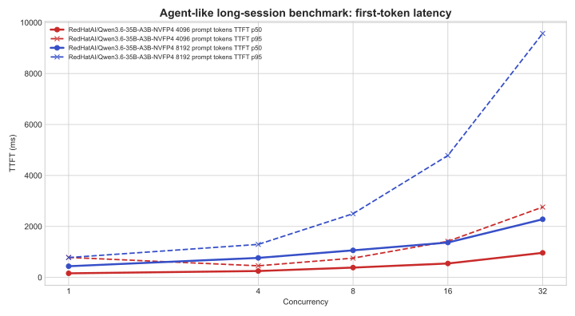
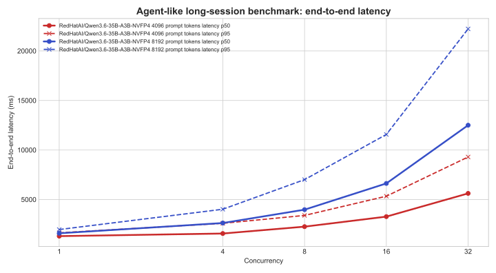
The 100K-level results are below. c8/c16/c32 were not tested here, because the main issue for a 100K prompt is no longer the short-context throughput curve; it is single-request prefill time, KV-cache pressure, and concurrency queueing under ultra-long context. c4 completion does not make it a good interactive default.
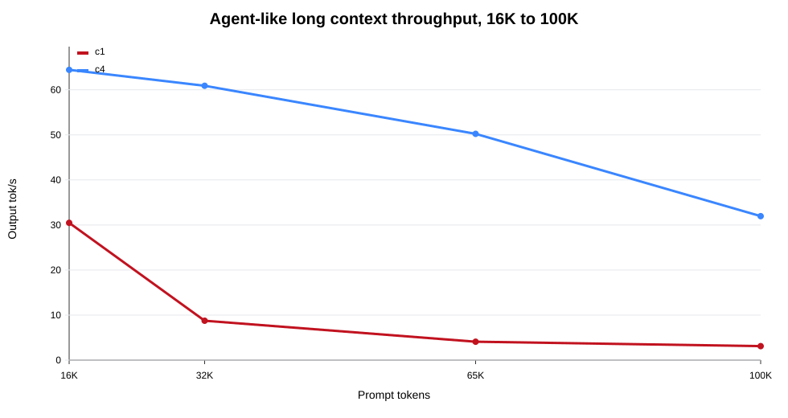
| Model | Prompt tokens | Concurrency | Requests | Success | output tok/s | TTFT p50 | TTFT p95 | Latency p50 | Latency p95 |
|---|---|---|---|---|---|---|---|---|---|
RedHatAI/Qwen3.6-35B-A3B-NVFP4 |
16384 | 1 | 4 | 4/4 | 30.47 | 495 ms | 531 ms | 1602 ms | 2167 ms |
RedHatAI/Qwen3.6-35B-A3B-NVFP4 |
16384 | 4 | 8 | 8/8 | 64.43 | 753 ms | 1384 ms | 3090 ms | 4413 ms |
RedHatAI/Qwen3.6-35B-A3B-NVFP4 |
32768 | 1 | 4 | 4/4 | 8.75 | 4467 ms | 4501 ms | 5618 ms | 6104 ms |
RedHatAI/Qwen3.6-35B-A3B-NVFP4 |
32768 | 4 | 8 | 8/8 | 60.90 | 701 ms | 1519 ms | 3281 ms | 4703 ms |
RedHatAI/Qwen3.6-35B-A3B-NVFP4 |
65536 | 1 | 4 | 4/4 | 4.08 | 10944 ms | 11034 ms | 12180 ms | 12630 ms |
RedHatAI/Qwen3.6-35B-A3B-NVFP4 |
65536 | 4 | 8 | 8/8 | 50.23 | 1197 ms | 2145 ms | 3800 ms | 5246 ms |
RedHatAI/Qwen3.6-35B-A3B-NVFP4 |
100000 | 1 | 4 | 4/4 | 3.10 | 15031 ms | 15238 ms | 16616 ms | 16725 ms |
RedHatAI/Qwen3.6-35B-A3B-NVFP4 |
100000 | 4 | 8 | 8/8 | 31.95 | 1925 ms | 4063 ms | 6262 ms | 8495 ms |
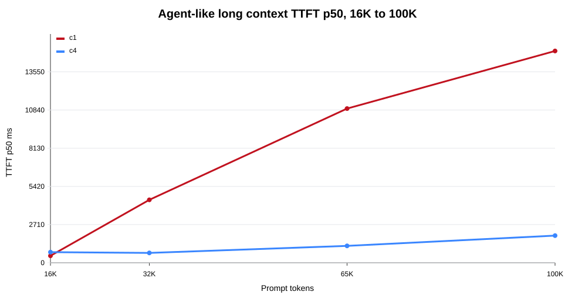
RedHatAI/Qwen3.6-35B-A3B-NVFP4 maintained a 100% success
rate across the 4K/8K/16K/32K/64K/100K agent-like tests. The bottleneck
is not task correctness; it is prefill time, queueing, and end-to-end
latency as context grows. c4 has lower TTFT p50 than c1 at 32K/64K/100K,
mainly because the same service was tested continuously and benefited
from cache, scheduling, and prefix-reuse effects. This should not be
extrapolated into “higher concurrency is better for interaction.”
Agent long-session guidance should be stratified by context length:
RedHatAI/Qwen3.6-35B-A3B-NVFP4 to
long-session agents.The Tier-0 deterministic eval in this report is not a full accuracy evaluation and cannot provide a statistically significant benchmark conclusion. A more precise name is Tier-0 smoke-quality probe.
Its purpose is:
Why only 12 cases:
Therefore, the conclusion from these 12 probes should be downgraded as follows:
In a very small deterministic smoke-quality probe,
RedHatAI/Qwen3.6-35B-A3B-NVFP4andQwen/Qwen3.6-35B-A3B-FP8did not show clearly different failure patterns. This is not enough to prove thatRedHatAI/Qwen3.6-35B-A3B-NVFP4has no accuracy loss in agent long sessions or complex reasoning tasks.
Current 12-case results:
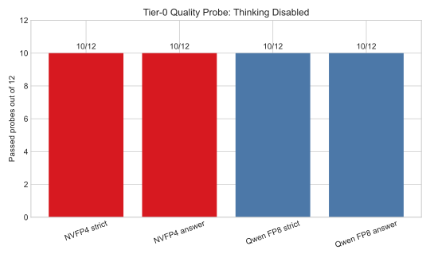
| Model | thinking | strict format | extracted answer | average latency |
|---|---|---|---|---|
RedHatAI/Qwen3.6-35B-A3B-NVFP4 |
disabled | 10/12 | 10/12 | 0.337 s |
Qwen/Qwen3.6-35B-A3B-FP8 |
disabled | 10/12 | 10/12 | 0.232 s |
The two failures were identical:
math_en_fraction: both models answered
13/12; the correct answer is 19/12.instruction_no_forbidden: both avoided the forbidden
character, but did not satisfy the exact 8-Chinese-character
constraint.The next evaluation should expand to:
RedHatAI/Qwen3.6-35B-A3B-NVFP4 vs
Qwen/Qwen3.6-35B-A3B-FP8 vs
nvidia/Qwen3.6-35B-A3B-NVFP4; thinking on/off; short
context vs 8K/16K long context.If the goal is to deploy RedHatAI/Qwen3.6-35B-A3B-NVFP4
quickly:
chat_template_kwargs.enable_thinking=false; use a separate
thinking strategy for complex reasoning.RedHatAI/Qwen3.6-35B-A3B-NVFP4, but the c32 TTFT p99 tail
needs retesting. It should not be used directly as the default
interactive runtime.RedHatAI/Qwen3.6-35B-A3B-FP8-dynamic
only with Red Hat vLLM 3.4.0.If the goal is to test nvidia/Qwen3.6-35B-A3B-NVFP4:
vllm/vllm-openai:nightly or eugr
spark-vllm-nvfp4:latest.--quantization modelopt; do not apply the RedHatAI
compressed-tensors recipe.--attention-backend flashinfer and
--moe-backend marlin as the current working baseline.--max-num-seqs 128; next work should add longer prompts,
more request repeats, and a NIM or NVIDIA validated runtime
comparison.This report cites only local test artifacts and public model/runtime names.
data/report-metrics-summary-r6.csvdata/sglang-runtime-matrix-2026-06-01-r6.csvnvidia/Qwen3.6-35B-A3B-NVFP4 c16/c64/c128 data:
data/nvidia-nvfp4-high-concurrency-2026-06-01.csvRedHatAI/Qwen3.6-35B-A3B-NVFP4:
data/redhatai-nvfp4-agent-long-context-16k-100k-2026-06-01.csvimages/chart-throughput-curves-clean-r3.svgRedHatAI/Qwen3.6-35B-A3B-NVFP4 common-point runtime
comparison:
images/chart-redhatai-nvfp4-runtime-common-r6.svgRedHatAI/Qwen3.6-35B-A3B-NVFP4 eugr and SGLang
full-sweep chart:
images/chart-redhatai-nvfp4-eugr-vs-sglang-full-r6.svgimages/chart-sglang-nvfp4-vs-fp8-aligned-r6.svgimages/chart-nvidia-nvfp4-high-concurrency-r6.svgimages/chart-agent-long-16k-100k-throughput-r6.svg,
images/chart-agent-long-16k-100k-ttft-r6.svgimages/chart-quality-tier0.svg